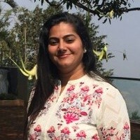
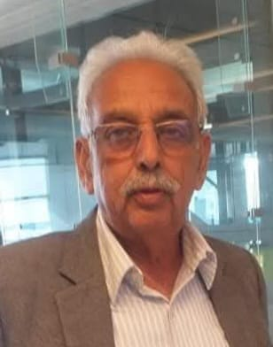
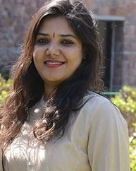
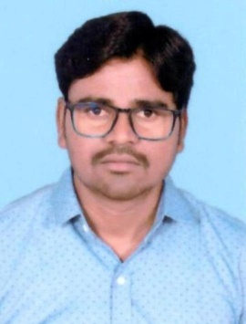
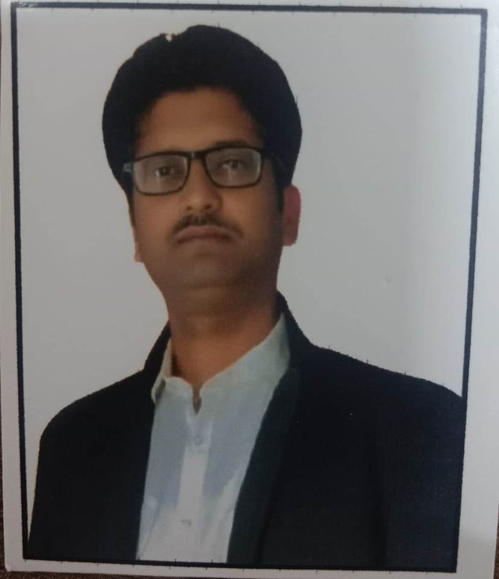

Meet Our Team

Ms. Pragati Mundhra
Director

Mr. Madan Singh Shekhawat
CEO

Ms. Deepal Solanki
AGM – Projects

Mr. Satyaranjan Satapathy
Manager – Project & HR

Mr. Rajesh Kumar Saini
Senior Admin Officer

Mr. Shyam Singh
Manager Certification